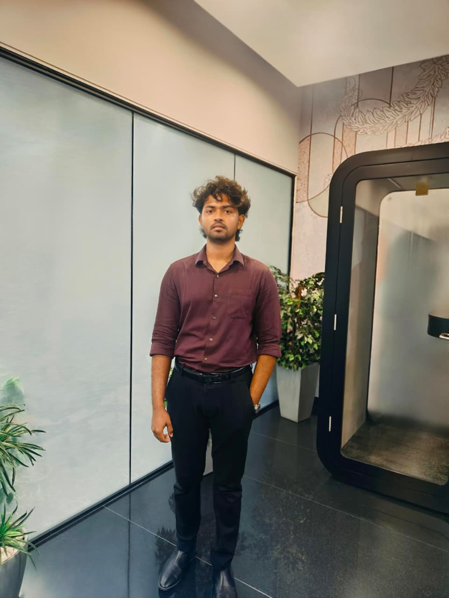

BUILDING INTELLIGENCE.
ENGINEERING POSSIBILITIES.
Languages
Linguistic capabilities for global developer integration:
Technical Skills
Web Technologies
- HTML & CSSExpert
- React.jsIntermediate
- DjangoIntermediate
- Node.jsIntermediate
- REST APIsIntermediate
AI & ML Tools
- Scikit-LearnAdvanced
- FAISS Vector SearchBasic
- Pandas / NumPyAdvanced
- StreamlitBasic
- Natural Language ProcessingBasic
Programming Languages
- PythonAdvanced
- C++Intermediate
- JavaScriptAdvanced
DevOps & Tools
- DockerBasic
- MinikubeBasic
- GitHub / GitBasic
- MongoDBIntermediate
Selected Work

Anonymous Real-Time Chat Platform
A secure, containerized real-time chat application built for private, anonymous interaction. Features localized room orchestrations, dynamic event handling, and container deployment pipelines.
$ python faiss_search.py --query "semantic similarity"
> Indexing 10,000+ vector embeddings...
> Query matched inside index in 0.043s.
Semantic Search Engine using FAISS
A high-performance retrieval module executing vector similarity searches across custom high-density text datasets. Streamlines query embeddings utilizing localized pipelines and Streamlit visualization components.
$ python manage.py runserver
> Loading fitness tracking schedules...
> Active Routine Generative Models Online.
Dynamic Fitness Web Platform
A structured web platform engineered with Django to handle active exercise schedule creation, dynamic routine recommendations, client progress metric logging, and local metric histories.
Milestones
Robust Engineering Workflows
Successfully designed and deployed secure service stacks using containerized applications and event protocols to achieve high reliability and speed.
Advanced Vector Retrievals
Engineered similarity search algorithms integrating FAISS and text embedding models to execute sub-second matching across dense matrices.
IIIT Tiruchirappalli CSE
Maintained strict academic focus at a premier national engineering institution, tracking a solid cumulative 7.89 CGPA score in Computer Science.
Discipline & Consistency
Integrating challenging physical training regimens (boxing, fitness work, tennis) alongside software schedules to sustain long-term stamina.
Let's Connect
If you have a project idea, open roles, or want to discuss full-stack developer opportunities, feel free to send a direct message.

About The Engineer // BACKGROUND & CORE CAPABILITIES
I am a Computer Science undergraduate at the Indian Institute of Information Technology Tiruchirappalli (IIIT Trichy), with a technical focus on applied artificial intelligence, backend distributed engineering, and autonomous robotics simulation.
Recently, I completed a research internship at IIITDM Kancheepuram under the guidance of Dr. Preeth, conducting telemetry data generation and routing intelligence on Flying Ad-Hoc Networks (FANETs). I bridge low-level systems, simulation environments, and modern web application stacks to engineer reliable, data-intensive software products.
Applied AI & Machine Learning
Developing high-dimensional embedding search algorithms (FAISS), supervised learning ensembles (XGBoost, CatBoost), and LLM API integrations with prompt engineering.
Robotics & UAV Swarm Simulation
Simulating multi-agent Flying Ad-Hoc Networks in Gazebo using ROS2 and PX4-Autopilot, synthesizing realistic mobility datasets for supervised link quality prediction.
Scalable Backend & Containerization
Engineering resilient backend architectures with Node.js, WebSockets, REST APIs, and Django, coupled with Docker containerization and Kubernetes (Minikube).
Engineered Projects & Deployments // VERIFIED SOURCE & RESEARCH IMPLEMENTATIONS
$ python faiss_search.py --vector-dim 384
> Loading HuggingFace embeddings... [OK]
> FAISS IndexFlatL2 initialized with 10k vectors
> Similarity calculation latency: 0.041s
STATION://STREAMLIT_RUNTIME_ACTIVE
Semantic Search Engine using FAISS
Developing semantic search using dense text embeddings and FAISS vector similarity search to retrieve contextually relevant results rather than keyword matching.
$ node server.js --router openrouter
> Tokenizer pipeline initialized: chunk=2048
> REST Endpoint /api/v1/summarize active
> LLM Prompt schema verified: status 200
STATION://REST_API_READY
AI Summarizer Chatbot
AI-powered chatbot that summarizes lengthy technical articles and transcripts using LLM APIs, prompt engineering patterns, and backend REST endpoints.
Anonymous Real-Time Chat Platform
Topic-based anonymous real-time discussion platform engineered with WebSockets, Docker containerization, and local Minikube Kubernetes cluster deployment.
$ npm run dev --port 3000
> Tracking service: routine_generator.js
> Workout metrics logging database: connected
> Containerization pipeline planned: Docker/K8s
STATION://LOCAL_DEV_BUILD
Dynamic Fitness Web Application
Fitness-focused web application with interactive routine generators, client progress metric logging, and planned containerization via Docker and Kubernetes.
$ ros2 launch fanet_swarm gazebo_uav30.py
> PX4-Autopilot connected: 30 nodes active
> Mobility: Random Waypoint & Random Direction
> Model Benchmark: 13 models evaluated
> Aggregate accuracy: 78.89% (Best: ~87%)
STATION://IIITDMK_RESEARCH_FACILITY
FANET Routing and Machine Learning Research
Research project conducted at IIITDM Kancheepuram involving UAV simulation, 30-drone dataset generation, mobility models, and supervised learning for intelligent routing.
Technical Arsenal // SYSTEM STACKS & INSTRUMENTATION (NO FAKE METRICS)
Engineering Experience & Academics // RESEARCH INTERNSHIPS & FORMAL TRAINING
Under the mentorship and guidance of Dr. Preeth
- Simulated complex Flying Ad-Hoc Networks (FANETs) using Gazebo, ROS2, and PX4-Autopilot software-in-the-loop (SITL).
- Engineered multi-UAV swarm scenarios and captured multi-variate telemetry data across a 30-drone simulated cluster.
- Synthesized dynamic mobility traces utilizing Random Waypoint (RWP) and Random Direction (RD) propagation models.
- Trained and benchmarked 13 supervised machine learning models (including XGBoost, CatBoost, and Random Forest ensembles) for predictive link connectivity and routing decisions.
- Attained an overall aggregate benchmark score of 78.89% (with top-performing model routing classification accuracy reaching approximately 87%).
- Active undergraduate in Computer Science with a cumulative academic standing of 7.86 CGPA.
- Core focus in Data Structures, Algorithm Design, Database Systems, Computer Networks, and Applied Machine Learning.
- Hands-on systems development in containerized microservices and deep vector indexing systems.
Rigorous foundation in Mathematics, Physics, and Chemistry (MPC), leading to successful national qualification for IIIT admissions.
Graduated with strong mathematical and sciences foundation, achieving academic distinction.
Academic & Research Certifications // OFFICIAL RECOGNITIONS
Issued for successful completion of research internship on Flying Ad-Hoc Network (FANET) routing protocols using ROS2, PX4-Autopilot, and Gazebo UAV simulations, benchmarked with 13 supervised learning models.
Transmit Telemetry // OPEN COMMS CHANNELS
Available for research collaborations, software engineering roles, and intelligent systems engineering. Transmit a dispatch or reach out directly across secure comms.